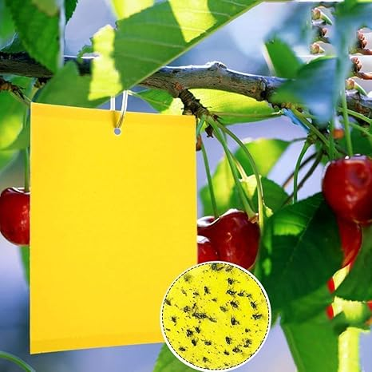

Monitoring: Helps track flying pests like whiteflies and aphids.
Early Detection: Provides early warning of pest infestations.
Non-Toxic Control: Offers chemical-free pest management, suitable for organic farming.
Population Suppression: Captures adult insects, reducing future pest numbers.
Cost-Effective: Inexpensive and easy to use for small and large-scale operations.
Compatible: Works well with other pest control methods.